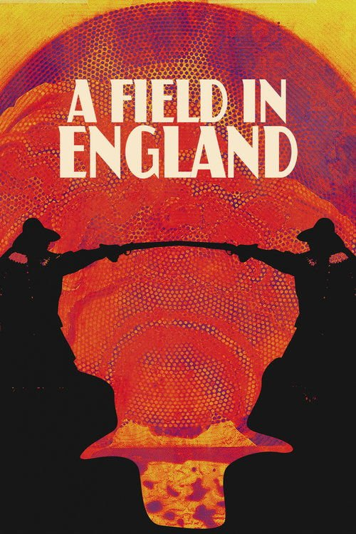

A Field in England (2013)

Plataforma: Star+
Puntuación IMDb: 6.7/10
Duración: 1h 21m
Género: Horror Psicológico, Histórico
Sinopsis Rápida
En la Inglaterra de la Guerra Civil, un grupo de desertores se encuentra perdido y atrapado en un campo misterioso y desolado. La locura, la paranoia y el misterio acechan a cada paso. ¿Qué secretos esconde el lugar?
Sinopsis Detallada
A Field in England es una película de horror psicológico ambientada en la Inglaterra del siglo XVII. Sigue a un grupo de desertores que se pierden en un campo aislado y se enfrentan a eventos extraños y perturbadores. La película se caracteriza por su atmósfera surrealista, su estética visualmente impactante y su exploración de temas como la paranoia y la locura.
¿Por qué tenés que verla?
- Atmosfera inquietante y claustrofóbica.
- Su estilo visual único y su atmósfera misteriosa.
- Explora temas de paranoia, locura y la naturaleza humana.
- Una experiencia cinematográfica extraña e inolvidable.
Idea Extra
Análisis de la simbología y el contexto histórico de la película.